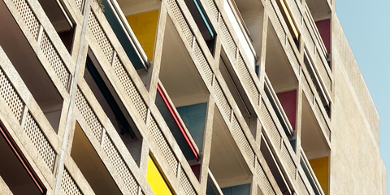
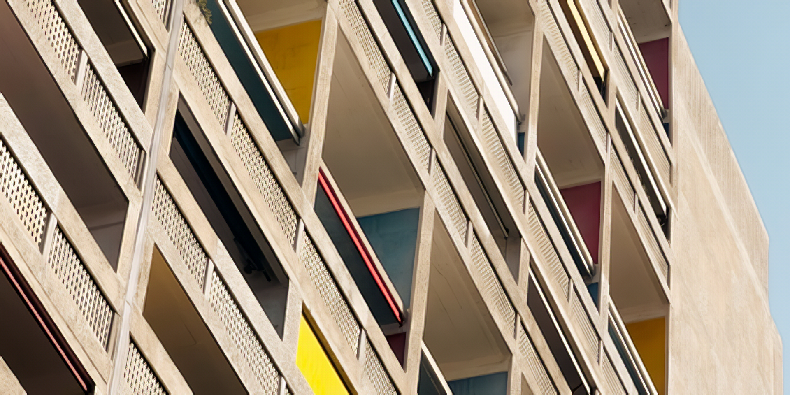
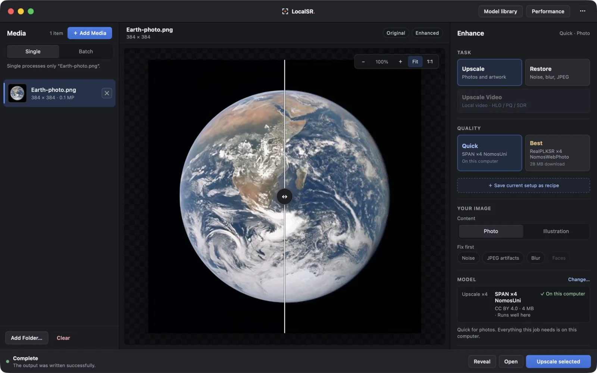

LocalSR
Upscale and restore photos on your own computer.
LocalSR is a free, open-source desktop app. It enlarges a photo, scan or illustration, or cleans up noise, blur and JPEG damage, with models that run on your own machine. Nothing is uploaded, and there is no account.v0.1.4-beta, released 4 October 2026, for macOS; Windows and Linux are on v0.1.3-beta. MIT license. Release notes.
Download the betamacOS · Windows · Linux
The result
One real run of the Quick Start model. Input and result are shown at the same size. Drag the divider to compare, or choose a side.The photograph was cropped and reduced to 480 × 240 pixels, then enlarged to 1920 × 960 with SPAN NomosUni. No blur was added to the input. How this example was made.


What it does
SR stands for super-resolution. A model estimates a larger image from the pixels you already have. The result is an interpretation, so the final judgement is yours.
Upscale photos, illustrations, screenshots and scans by 2×, 3× or 4×, one at a time or as a batch.Large images are processed in overlapping tiles to work within available memory.
Restore at the same size: dedicated models work on image noise, JPEG artifacts or motion blur without enlarging the image. Clean up first, then upscale.
Edit a photo by describing the change, with Qwen Image Edit 2511 or FLUX.2 klein 4B running on your Mac. New in 0.1.4 and experimental; the result is a new image, and the original stays as it was.The editing models are separate 5 to 26 GB downloads. FLUX.2 klein 4B fits a 16 GB Mac; Qwen Image Edit 2511 needs 24 GB or more. Mac only for now.
Files and colour. JPEG, PNG, WebP, TIFF and DNG in; PNG, JPEG, TIFF or WebP out, with ICC-aware colour.Metadata handling depends on the format and settings.
Models download when you choose them, from pinned sources, and are checked against their expected size and SHA-256 checksum. Each shows its author and license before download, and the model guide explains every one in plain words.
Video is an experiment, marked Labs in the app. Phone and camera videos can be upscaled frame by frame, with timing, rotation and audio kept; optional SeedVR2 models and HDR preservation are there to explore.Video is slow on any computer. Start with a short clip.
Privacy. Photos and videos are processed on your computer and never uploaded. The app checks for updates at launch and sends an anonymous count with that check, which you can turn off. The website counts visits without cookies.The privacy page describes every connection the app and this site make.
The app
A desktop workspace for a patient second look. Choose a model, check the result, keep what works.

- Start with what you have. Open a photograph, screenshot, illustration or scan, as JPEG, PNG, WebP, TIFF or DNG. Work on a single image or build a batch queue.
- Choose the treatment. Quick Start gives you a place to begin. Choose a different model for photo enlargement, illustration, denoising or deblurring; models download when you choose them.
- Look closely. Then save. Inspect the preview and save a separate result. The processing happens here, on your computer, with no cloud processing and no account. Your source image stays yours.
Download
v0.1.4-beta, released . Choose the installer for your computer.The macOS installer is Developer ID signed and notarized by Apple, and future betas arrive as in-app updates; it is the most tested build. The Windows and Linux packages are still v0.1.3-beta, without Edit; they run on the CPU, are not signed and do not update themselves yet.
Every package ships with its full source and license notices. LocalSR is provided as is under the MIT license, without warranty. Before installing, read what to know before you download. The release notes, the user guide and the model guide go deeper; SHA256SUMS lists every checksum; bugs and questions go to support. The source is on GitHub.
Questions
Is it free? Yes. LocalSR is open source under the MIT license, with nothing to buy or sign up for. The models you download keep their own licenses; the model guide lists them.
Do my images leave my computer? No. Photos and videos are processed on your computer and never uploaded. You need an internet connection to download models; after that, they run locally. The app checks for updates at launch and sends an anonymous count with that check (app version, platform and channel, no identifiers), which you can turn off. The website counts visits without cookies. The privacy page has the details.
What does “beta” mean here? Features can still change, and the Mac build is the most tested: it is signed, notarized and tells you when a newer beta is available. The Windows and Linux packages pass the same automated checks but have not had the manual testing the Mac build gets. Keep your originals. The release notes spell out the current limitations, and bugs go to GitHub Issues.
Will it use my graphics card? On a Mac, yes: the app uses the Apple Silicon GPU through Metal (MPS), with a CPU fallback. On Windows and Linux the standard download runs on the CPU. There are also GPU editions: AMD ROCm for Linux, tested on a Radeon RX 9060 XT, and NVIDIA CUDA (Windows and Linux) and DirectML (Windows), which are untested: they have not yet run on those graphics cards. The release notes have the details.
Can it recover the original detail? Super-resolution estimates plausible detail from an image. It cannot guarantee the recovery of information that was lost, and results vary by source and model. Inspect small text, faces and fine patterns carefully.
Are the models included? Most models download separately, when selected. The optional HAT-S and HAT-L Face variants require a verified user-supplied checkpoint; read about their results and availability. LocalSR checks curated downloads against their expected size and SHA-256 checksum. Model sizes and licenses vary; some commercial-use terms still need clarification. See the model notes before using a particular model commercially.